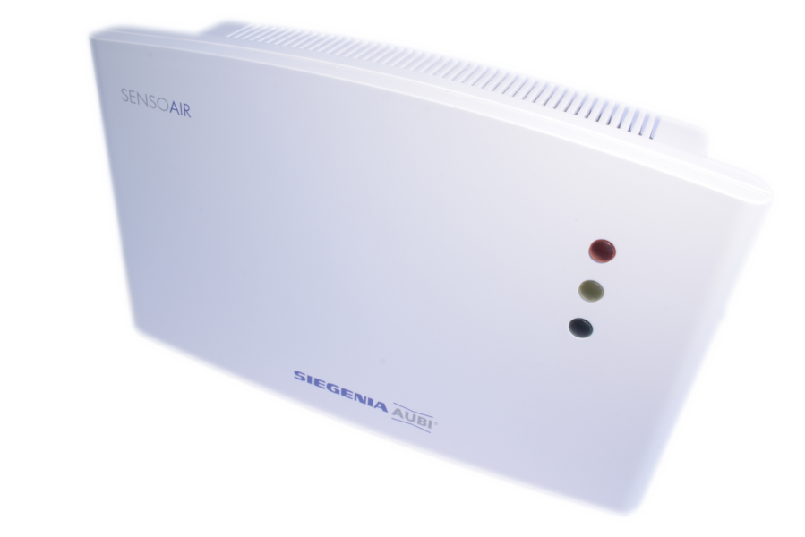
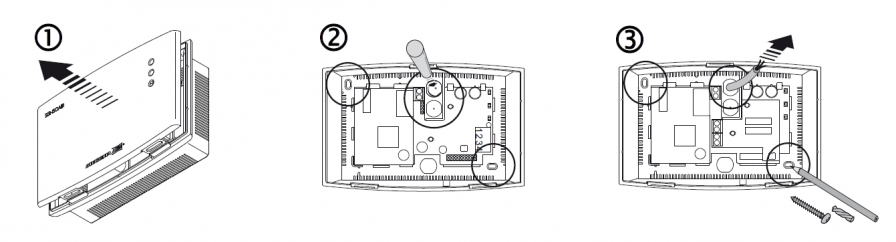
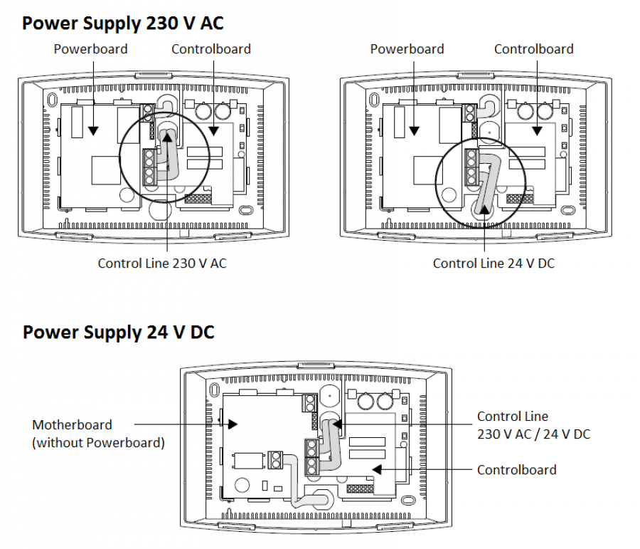

SIG_SENS_W
Firmware Version : 1.4 |
 |
Quick Start
S This device is a Z-Wave Sensor. A single Click on the Z-Wave Button on the bottom side to confirm inclusion, exclusion and association.
Please refer to the chapters below for detailed information about all aspects of the products usage.
What is Z-Wave?
This device is equipped with wireless communication complying to the Z-Wave standard. Z-Wave is the international standard for wireless communication in smart homes and buildings. It is using the frequency of 868.42 MHz to realize a very stable and secure communication. Each message is reconfirmed (two-way communication) and every mains powered node can act as a repeater for other nodes (meshed network) in case the receiver is not in direct wireless range of the transmitter.
Z-Wave differentiates between Controllers and Slaves. Slaves are either sensors (S) transmitting metered or measured data or actuators (A) capable to execute an action. Controllers are either static mains powered controllers (C) also referred to as gateways or mobile battery operated remote controls (R). This results in a number of possible communication patterns within a Z-Wave network that are partly or completely supported by a specific device.

- Controllers control actuators
- Actuators report change of status back to controller
- Sensors report change of status of measured values to controller
- Sensors directly control actuators
- Actuators control other actuators
- Remote controls send signals to static controllers to trigger scenes or other actions
- Remote controls control other actuators.
There are two different role a controller can have. There is always one single primary controller that is managing the network and including/excluding devices. The controller may have other functions - like control buttons - as well. All other controllers don't manage the network itself but can control other devices. They are called secondary controllers. The image also shows that its not possible to operate a sensor just from a remote control. Sensors only communicate with static controllers.
Product description
The concentration of CO2 in the air is measured in parts per million (ppm). The CO2 concentration outdoors is approx. 350 ppm on average. A level of above approx. 800 ppm negatively impacts on our well-being. The concentration of CO2 in a room depends on the number of people in the room, the length of time that they spend in that room and the air exchange rate. For example, a 60 m³ room that contains two people and has an air exchange rate of 1 will reach a CO2 concentration of 900 ppm. Without ventilation, the concentration of CO2 in the room would increase to 1,500 ppm after two hours and 2,500 ppm after five hours.
In order to measure air quality, SENSOAIR type wave uses two sensors to detect the carbon dioxide (CO2) concentration in closed rooms. The quality of the air that has been measured is indicated using a LED light and is transmitted via Z-Wave.
Before Device is installed
Please read carefully the enclosed user manual before installation of the radio-actuator, in order to ensure an error-free functioning.
ATTENTION: only authorized technicians under consideration of the country-specific installation guidelines/norms may do works with 230 Volt mains power. Prior to the assembly of the product, the voltage network has to be switched off and ensured against re-switching.
The product is permitted only for proper use as specified in the user manual. Any kind of guarantee claim has to be forfeited if changes, modifications or painting are undertaken. The product must be checked for damages immediately after unpacking. In the case of damages, the product must not be operated in any case. If a danger-free operation of the equipment cannot be assured, the voltage supply has to be interrupted immediately and the equipment has to be protected from unintended operation.
Installation Guidelines

- Open the casing by removing the front part.
- Unblock the shaped disruption points for the screws and cable set.
- Pull the cable set through the cut-out and use the back part of the casing as a pattern for the screws.
- Connect the cable set as shown in the figure. You can power the device with 230V AC or 24V DC.
- Close the casing before the first power up.

Note:
- Use only indoors in dry and dust free rooms.
- Use only in an environmental temperatur from 5°C - 40°C.
- The device is NOT to be used with gas warning system or similar systems.
- Do not use solvents close to the device.
- Silicon vapours can cause malfunction.
- Use only with original accessories from SIEGENIA-AUBI.
- The installation should only be done by experienced professionals according to the mounting instructions.
- Use only in perfect technical condition. Do not make any modifications to the appliance.
- Make sure that the ventilation openings remain unobstructed and not be covered by furniture and other objects.
- Repairs should only be done by experienced professionals.
Behavior within the Z-Wave network
I On factory default the device does not belong to any Z-Wave network. The device needs to join an existing wireless network to communicate with the devices of this network. This process is called Inclusion. Devices can also leave a network. This process is called Exclusion. Both processes are initiated by the primary controller of the Z-Wave network. This controller will be turned into exclusion respective inclusion mode. Please refer to your primary controllers manual on how to turn your controller into inclusion or exclusion mode. Only if the primary controller is in inclusion or exclusion mode, this device can join or leave the network. Leaving the network - i.e. being excluded - sets the device back to factory default.
If the device already belongs to a network, follow the exclusion process before including it in your network. Otherwise inclusion of this device will fail. If the controller being included was a primary controller, it has to be reset first.
Single Click the Z-Wave Button on the bottom side confirms inclusion and exclusion.
Operating the device
Before putting the system into service an automatic calibration has to be done.
Preconditions: The room has to be well ventilated. The room temperatur should be between 5°C and 40°C. There must be no persons or animals in the area of operation.
Calibration:
- Switching on power - calibration starts.
- Sensors are heated up and calibrated to 350 ppm - LED one time flashes green.
- After the calibration is done (approx. 30 minutes), the LED flashes continuously green. The device is ready to use now.
The SENSOAIR measures the carbon dioxide concentration (CO2) of the ambient air. The measured air qualitiy is shown with the LED lights.

Node Information Frame
NI The Node Information Frame is the business card of a Z-Wave device. It contains information about the device type and the technical capabilities. The inclusion and exclusion of the device is confirmed by sending out a Node Information Frame. Beside this it may be needed for certain network operations to send out a Node Information Frame.
Single Click the Z-Wave Button on the bottom side sends out a Node Information Frame.
LED Control
A short flashing of the yellow LED means:
- Device was included or excluded.
- An association was set.
- Device was reset to factory settings.
Associations
A Z-Wave devices control other Z-Wave devices. The relationship between one device controlling another device is called association. In order to control a different device, the controlling device needs to maintain a list of devices that will receive controlling commands. These lists are called association groups and they are always related to certain events (e.g. button pressed, sensor triggers, ...). In case the event happens all devices stored in the respective association group will receive a common wireless command.
Association Groups:
| 1 | Unsolicitated Sensor Reports (max. nodes in group: 5) |
Configuration Parameters
Z-Wave products are supposed to work out of the box after inclusion, however certain configuration can adapt the function better to user needs or unlock further enhanced features.
IMPORTANT: Controllers may only allow to configure signed values. In order to set values in the range 128 … 255 the value sent in the application shall be the desired value minus 256. For example: to set a parameter to 200 it may be needed to set a value of 200 minus 256 = minus 56. In case of two byte value the same logic applies: Values greater than 32768 may needed to be given as negative values too.
| Value | Description |
|---|---|
| 0 | Send unsolicitated reports when the C02 level hits 600, 800, 100, 1500, 2000 or 2500 ppm. |
| 1 | Enables regular unsolicited Sensor reports. |
| 2 | A BASIC Set command is send, when the sensor hits the defined CO2 level. |
| 3 | Enables broadcast reports. |
| 7 | Enables the front side LED. |
| Value | Description |
|---|---|
| 1 — 255 | sec. (Default 30) |
Command Classes
Supported Command Classes- Basic (version 1)
- Association (version 1)
- Version (version 1)
- Configuration (version 1)
- Multilevel Sensor (version 3)
- Manufacturer Specific (version 1)
- Sensor Configuration (version 1)
Technical Data
| Explorer Frame Support | No |
| SDK | 5.02 pl3 |
| Device Type | Slave with routing capabilities |
| Generic Device Class | Multilevel Sensor |
| Specific Device Class | Routing Multilevel Sensor |
| Routing | Yes |
| FLiRS | No |
| Firmware Version | 1.4 |
Explanation of Z-Wave specific terms
- Controller — is a Z-Wave device with capabilities to manage the network. Controllers are typically Gateways, Remote Controls or battery operated wall controllers.
- Slave — is a Z-Wave device without capabilities to manage the network. Slaves can be sensors, actuators and even remote controls.
- Primary Controller — is the central organizer of the network. It must be a controller. There can be only one primary controller in a Z-Wave network.
- Inclusion — is the process of bringing new Z-Wave devices into a network.
- Exclusion — is the process of removing Z-Wave devices from the network.
- Association — is a control relationship between a controlling device and a controlled device.
- Wakeup Notification — is a special wireless message issued by a Z-Wave device to annonces that is is able to communicate.
- Node Information Frame — is a special wireless message issued by a Z_Wave device to announce its capabilities and functions.
Disposal Guidelines
The product does not contain hazardous chemicals.
Do not dispose of electrical appliances as unsorted municipal waste, use separate collection facilities. Contact your local government for information regarding the collection systems available. If electrical appliances are disposed of in landfills or dumps, hazardous substances can leak into the groundwater and get into the food chain, damaging your health and well-being.